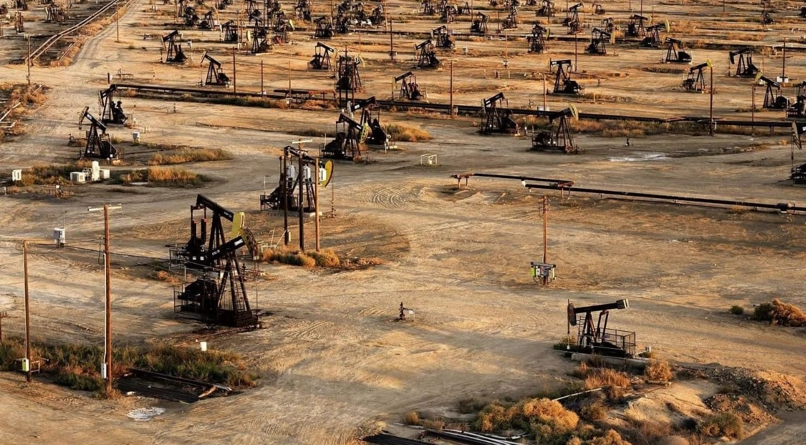

Los hidrocarburos son materia orgánica, es decir restos de algas y peces que se acumularon en el fondo del mar que quedó bajo capas geológicas de ricas sedimentarias y, luego de 250 millones de años se transformaron en gas y petróleo. Estos son considerados recursos no renovables. Para que esto sucediera fue necesario ese tiempo para que esta materia se cubriera de capas de tierra y otros materiales generando presión y temperatura con el correr de millones de años.
También conocido como “crudo” u “el oro negro” por los diversos usos que se le dan en la actualidad. Es un compuesto por un 14% de parafinas normales, 30% de parafinas, resinas y asfaltenos 10%, 16% de parafinas ramificadas y 30% de aromáticos. Su color es variable, entre el ámbar y el negro.
Está constituido por; metano (97%), etano (1,1%), propano (0,1%), butano (0,1%), dióxido de Carbono (1%) y nitrógeno (0,7%). No tiene sabor, olor ni color y se lo puede encontrar en yacimientos junto al petróleo o separado de este.
La palabra “Offshore” significa alejado de la costa, esto quiere decir que los hidrocarburos se extraen de un yacimiento en el fondo del mar ya sea de forma convencional o no convencional.

Se perfora hasta llegar al yacimiento en donde los hidrocarburos se encuentran acumulados. Cuando se extrae todo lo que contiene, el proceso de extracción se termina.

Este método de extracción no convencional mediante fractura hidráulica (Fracking) consiste en extraer los hidrocarburos no de un yacimiento con la materia acumulada, sino de los poros de la tierra en donde este se encuentra, mediante la inyección de agua y químicos a gran presión fracturando la tierra para luego extraerlos.
A continuación, describiremos detalladamente el proceso:
● Se comienza realizando los caminos por donde pasarán los camiones de la empresa y la limpieza e instalación de maquinaria
en el lugar en donde se realizará la operación.
● Posteriormente, se perfora el suelo de forma vertical con un trépano. A una profundidad estimada de 900 a 5000 metros
de profundidad.
● Luego, se coloca el casing, es decir, tres tubos de hierro o acero con una capa de cemento entre medio de estos, que recubren
la primera parte del pozo.
● Seguidamente, en el mismo pozo, se realiza una perforación horizontal con una longitud estimada de 1000 a 3000 metros de
longitud.
● En la parte final del pozo horizontal se coloca un explosivo el cual detona generando grietas de 0,2 a 2 milímetros de
grosor.
● Se procede a inyectar en el pozo una mezcla/fluido compuesta en un 90% de agua potable, 8 a 9,5% con arena de silicato y
entre el 0,5 a 2% de compuestos químicos para expandir el rango de las grietas aproximadamente unos 250 metros hacia los laterales
y 40 a 80 metros hacia arriba o abajo.
Algunos de los químicos utilizados son:
● Ácido clorhídrico
● Goma guar
● Poliacrilamida
● Etilenglicol: Químico incoloro e inoloro con sabor a dulce que al ser ingerido produce el envenenamiento debido a la
ingestión
de anticongelante.
● Borato de sodio: pesticida (un pesticida son sustancias químicas que se utilizan para matar plagas. Pero, los restos de
estos se dispersan en el ambiente y se convierten en contaminantes para los sistemas biótico (animales y plantas principalmente) y
abiótico (suelo, aire y agua) amenazando su estabilidad y representando un peligro de salud pública) usado con frecuencia en la
agricultura, un producto utilizado en diversos procesos para la elaboración de joyería, vidrio, cerámica, pintura, entre muchos
otros.
● Glutaraldheído: Trabajadores de salud fueron expuestos al glutaraldehído teniendo efectos como: Irritación de la garganta
y los pulmones. Síntomas parecidos a los del asma, y dificultad para respirar. Irritación de la nariz, estornudos, y resuello.
● Se coloca un tapón para aislar la zona del pozo ya fracturada para repetir el proceso las veces que sea necesario.
● Al terminar este proceso, se quitan los tapones y se extrae entre el 5% al 80% del fluido inyectado, y las opciones para
estos desechos son:
o Opción 1: La recuperación y reutilización (de una cierta cantidad de químicos).
o Opción 2: Reinyección en un pozo que ya no se utiliza.
o Opción 3: Simplemente se alojan en piletas al aire libre.
● Después de quitar el fluido, los hidrocarburos comienzan a subir por el pozo gracias a la
bomba de extracción.
El fracking es una técnica controversial, ya que trae consigo problemas subyacentes los cuales suelen ser ignorados y hasta escondidos por las empresas que realizan este proceso o personas relacionadas a este sistema.
“Esta técnica emplea diversas sustancias que pueden representar peligros para la salud humana y el ambiente como riesgos de explosión, contaminación de acuíferos, generación de sequías en fuentes de agua, rupturas de las capas de suelo subterráneas, dificultades en las áreas de ganadería, agricultura y turismo, además, de la afectación directa de la calidad de vida de los habitantes de las zonas donde se practique.” (Ingeniero ambiental, Duván Javier Mesa, 2020)
Los pozos no convencionales duran de 6 a 20 años, en ese lapso de tiempo, los fluidos que se extraen van deteriorando la cañería generando fisuras y en la mayoría de los casos no se le realiza ningún tipo mantenimiento a la tubería. Estas fisuras hacen que los químicos y los hidrocarburos se filtren contaminando la tierra dejándola infértil y en otros casos contaminar los conductos y acuíferos de agua potable. Afectando la flora, fauna, agricultura y ganadería del lugar.
En la ciudad de Allen se encuentra la chacra 51, uno de los residentes de este lugar dice que “el fracking destruye la economía regional, peras, manzanas y duraznos. Nos declaran zona de sacrificio, siendo Allen la capital nacional de la pera, tenemos fiesta nacional de la pera que ahora es empetrolada, no la podemos tener más. Tenemos unas torres que hacen fracking con todos los contaminantes que tiene, en medio de las chacras, a menos de cien metros de los frutales y nadie lo cree”
En la provincia de Neuquén se ha declarado emergencia hídrica, pero las empresas relacionadas al fracking siguen sacando agua del río Neuquén, pagando 90 pesos por cada 1000 litros. Mientras que los residentes cercanos a los yacimientos no pueden tomar el agua de la canilla teniendo que comprar bidones de agua.
“No tenemos agua potable para tomar ni regar actualmente, pero un caño de 26 pulgadas se lleva millones y millones de litros cúbicos de agua para sus operaciones sin control. Tenemos una doble situación ambiental acá, los sismos por un lado y el problema del agua, ahora hay una emergencia hídrica declarada. La situación no es buena y no tenemos ninguna respuesta o explicación que nos pueda dar nosotros un poco de tranquilidad". (Testimonio de un residente de Sauzal bonito, 2021)
Existen personas que cuando no pueden comprar agua, se abastecen del agua de la canilla, si mencionamos esto junto con la contaminación del aire, estamos hablando de que las ciudades y pueblos aledaños a los yacimientos tengan potenciales problemas de salud y si le agregamos a esto una pandemia no sería la situación más favorable.
Testimonio: “Estela, que espera mellizos, fue internada recientemente. En una de las ocasiones en que la petrolera estuvo trabajando a Micaela se le hinchó todo el cuerpo y tuvo problemas respiratorios. Ella piensa que el fracking es el problema, “cuando los pozos están con actividad la gente se enferma, cuando no hay actividades, no hay enfermedades. Nosotras pedimos que manden médicos que nos hagan estudios y que se den cuenta que las petroleras enferman”. Son frecuentes los dolores de cabeza y el EPOC (enfermedad pulmonar obstructiva crónica), algo que les preocupa mucho en el contexto actual de la pandemia. Estas enfermedades generan, además, un costo en medicamentos que es muy difícil de sustentar por las familias” (fragmento de una entrevista por Martín Álvarez Mullally, 2021)
En la localidad de Añelo, Neuquén, los químicos utilizados en la fractura son desechados en piletas al aire libre a cinco kilómetros del paraje. Los vecinos se quejan de que el olor es insoportable, además de que las empresas no están cumpliendo la ley al haber creado un basurero químico tan cerca de Añelo.
“Esto está en la meseta arriba de Añelo a 5 kilómetros de la población, cuando el decreto provincial que regula el establecimiento de este tipo plantas establece que tiene que estar a más de 8 kilómetros proyectando una población de 20 años” (Fernando Cabrera, del observatorio petrolero sur)
“Sin ir más lejos vos vas a el barrio de la meseta donde hay varias empresas de tratamiento de cuting, a las tres de la mañana si no hay viento es impresionante el olor a Cuiting que hay” (residente de Añelo)
Gonzalo Strano de Greenpleace Argentina opina que; “Triper es una planta de tratamiento de residuos de cuting, desde el lugar de donde se extraen hasta llegar a tripper son trasladados en camiones sin ningún tipo de control. Deberían ser cubiertos, totalmente cerrados porque están trasladando productos químicos, contaminantes muy fuertes”. Como se mencionó en uno de los anteriores párrafos Greenpleace cree que las empresas no están cumpliendo la ley, al haber creado un basurero químico tan cerca de Añelo.
En pueblos y ciudades cercanas también se han registrado sismos de magnitud 3.8 (aproximadamente) provocados por la reinyección del agua contaminada a pozos de fracking que ya no se utilizan. Lo que provoca el deslizamiento de las capas de la tierra, generando por consecuencia un movimiento brusco en la superficie.
"A partir del 2015 comenzaron a haber sismos que se pueden percibir dentro de las casas, porque se mueve todo a niveles de película. Cuadros, vasos, todo lo que hay en la alacena todo tiembla, tiembla de manera bien palpable y tangible no es algo que a uno le parece o una falsa impresión. El de mayor intensidad que yo recuerde, es a las 4 de la mañana en el 2019, nos obligó a todos los residentes a levantarnos y salir literalmente como estábamos afuera de las casas. Tuvo una duración de más 10 o 15 segundos calculo yo, que es un instante para muchos, pero cuando uno no sabe qué es lo que está pasando definitivamente es tremendo.” (Testimonio de un residente de Sauzal bonito, 2021)
Vaca Muerta es el primer gran desarrollo de fracking en América Latina.
— Gatopardo (@Gatopardocom) April 19, 2023
Muy cerca de ahí, en la comunidad de Sauzal Bonito, las oportunidades de desarrollo se convirtieron en temblores.
¿Por qué tiembla ahora en un lugar donde antes no había sismos?https://t.co/4l8vESFxl0
También existen los derrames de petróleo que afectan de forma directa al suelo, agua, aire, flora y fauna.
“tristemente tenemos que decir que los derrames son constantes, el dato oficial del 2018 es de más de 800 derrames o incidentes ambientales, acá un detalle es que estos son lo reportados, seguramente el número debe ser mucho mayor” (Gonzalo Strano de Greenpeace Argentina https://www.greenpeace.org/argentina/)
De acuerdo al análisis satelital realizado, a tres días del derrame todavía no se iniciaron las tareas de limpieza; hay un mínimo de 85 mil metros cuadrados impactados directamente por el crudo (equivalente a 10 canchas de fútbol). #VacaMuerta #Derrame pic.twitter.com/gtxbd0ifSJ
— Greenpeace Argentina (@GreenpeaceArg) October 26, 2018
Los conflictos territoriales también están en esta lista. El campo Maripe (cerca de Añelo), de 11.100 hectáreas perteneciente a la comunidad Mapuche desde 1927. En el año 2013 se generó un conflicto entre Pluspetrol y la comunidad mapuche ya que la empresa quería imponer sus instalaciones dentro del campo sin el consentimiento de la comunidad, además de que también contaminaron su cosecha y a sus animales. Actualmente se operan tres torres de perforación.
“Nosotros antes éramos libres, podíamos caminar libres. Acá ahora no somos libres “si, pero ustedes con el tiempo van a cobrar dinero” pero el dinero no nos sirve de nada, a nosotros lo que nos sirve es la vida, para poder disfrutar de nuestros hijos de nuestros nietos, nosotros peleamos día y noche por este campo, para que no fuera contaminado” (Mabel Campo de la comunidad Mapuche, Campo Maripe).
Por último, la seguridad de los operarios que trabajan dentro de la empresa tampoco está asegurada. En el año 2019 dos operarios, Cristian Baeza y su compañero que intentó rescatarlo murieron al instante tras caer dentro de una pileta de decantación de la empresa Tecpetrol.
“Para nosotros faltan controles, quieren ahorrar costos (porque lo hemos vivido) las empresas y las productoras quieren perforar, sacar lo que está abajo a cualquier precio” (Ricardo Jara del sindicato de petroleros)
“Si tengo actividad, voy a tener accidentes porque el accidente en sí lo podés minimizar, pero nunca estás exento de ocurra, se habla de estándares buenos de seguridad, pero el riesgo no es cero” (Daniel Kokogian geólogo en petróleo)
“Están manejando millones de dólares diarios ¿porque nosotros tenemos que pagar estos precios? ¿Por decidía? ¿Cuánto te ahorraste para que mi hijo no volviera más?” (Feliciano Baeza, padre de Cristian Baeza)
🛢️La actividad petrolera offshore implica gravísimos impactos ambientales, para nuestro Mar Argentino y fauna🌊
— Greenpeace Argentina (@GreenpeaceArg) April 11, 2023
❌Estos proyectos no benefician a nadie más que a las corporaciones involucradas y sólo traen destrucción de lo que nos da vida y alimento#MarArgentinoSinPetróleo https://t.co/zw5Aj80Fk9